CHAPTER EIGHT

SECRETS OF THE ROSE CROSS BACK
Is not this Symbol to be found upon the breast of all true Brethren of the Rosie Cross? Holdfast to this Jewel and treasure it as thy Life itself, for many and great are its virtues….62
It may seem odd that I dedicate an entire chapter to the design that adorns the back of each of the seventy-eight cards of the Thoth Tarot (see figure 2, inside front cover). I beg your indulgence and assure you (with some confidence) that your patience will be rewarded.
For me, the beautiful Rose Cross that appears on the back of each card is the image that first attracted me to the Thoth Tarot. It is Lady Harris's exquisite interpretation of the Hermetic Rose Cross (see figure 3, inside back cover) and is arguably the most recognizable feature of the deck. As a young tarot enthusiast, I became intimately familiar with every detail of the design by helping a friend reproduce the image as a stained-glass window.
It was clear to me, even as a novice, that the large red, blue, yellow, and green squares that form the extremities of the arms of the cross could represent the four tarot suits of Wands, Cups, Swords, and Disks; and that each of the twenty-two petals of the great rose represented the twenty-two trump cards. One afternoon, after lodge convocation,63 I was smugly sharing these observations with another neophyte when I was soundly upbraided by an elderly senior member who fixed his gray gaze on me and, in the most solemn tone, informed me, “You have seen but the earliest rays!”
I innocently laughed in his face, not out of disrespect, but because his delivery was so dramatic and corny I was sure he was trying to be funny. He was not amused. “Come with me!” he said. I knew I was in trouble. I felt terrible. I followed him outside the temple, fully expecting to be hurled into the eternal “outer darkness.” Instead, we walked about half a block down the street to where his car was parked. I awkwardly started to apologize, but I don't think he heard me. He opened the trunk of his car and lifted a dark purple velvet bag from a leather briefcase. He undid the gold braided tie and lifted out a golden Rose Cross about five inches tall. It hung from a blue ribbon and was proportioned exactly like the Harris cross, but was festooned with many more colorful details. He didn't say a word. He just held it up about a foot before my eyes and let it twirl slowly in the late afternoon sunlight.
It was indescribably beautiful. Every petal of the great rose was brightly enameled and displayed an exquisitely formed Hebrew letter of contrasting color. Upon each arm of the cross was a colored pentagram surrounded by the elemental symbols for fire, water, air, earth, and spirit. The alchemical symbols for salt, mercury, and sulfur were nestled in the triple lobes that decorated the end of each arm. A hexagram surrounded by colorful planetary symbols was centered upon the white square directly beneath the great rose.
The object was obviously made by a skilled craftsman. The only gold visible on the front gleamed from the raised outlines (probably gold wire) that trimmed the edges and each of the twenty-two petals of the rose. Each petal was meticulously filled with a rounded drop of colored enamel that gave the appearance of a precious stone.
The back had no enameling at all, just gold polished to a mirrored finish upon which words were engraved. My street-side psychopomp would not let me read what was written there.64 After a moment or two of allowing me gawk in wonder, he told me with obvious pleasure: “This is the Rosy Cross. It's all here.” He then put it back in the bag and shut the trunk.
I would soon learn that this was the device worn as the personal lamen of initiates of the Golden Dawn who achieved the degree of Adeptus Minor (the same degree in which they are required to paint their own deck of tarot cards). However, the years would reveal to me that it is much more than a colorful decoration or a fraternal order's badge of distinction. Properly understood, it is at once the door, the lock, and the key to the temple of the Western mysteries. It and the Tree of Life (which we will discuss in the next chapter) quite literally are the Table of Contents of the tarot.
THE HOLY QABALAH
As I said earlier, we hold the universe in our hands every time we pick up a deck of tarot cards. The mystery of how the universe was created, how it is sustained, and where you and I fit into it has been the spiritual quest of fools and holy men and women since the dawn of human consciousness. For centuries, students and sages of Hebrew mysticism have developed a unique spiritual science called Qabalah.65
Qabalah is not a religion, philosophy, or doctrine. It is a way of thinking, a way of looking at the world, a convenient method by which we dissect, examine, and organize the universe and ourselves. It is a means by which we connect everything in the universe with everything else in the universe. Numbers are the basic working tools of this marvelous discipline, and some of the most important numbers in Qabalistic cosmology are precisely the same numbers upon which the tarot is constructed.
“Oh!” I hear you scream. “Not math again! You said there'd be no more math!” Don't worry. Even though Crowley wrote that the tarot “was designed as a practical instrument for Qabalistic calculations and for divination,”66 even though he filled forty-eight pages of Part I of The Book of Thoth in an attempt to convince us how important the Qabalah is in understanding the tarot, I won't force us to dive too deeply into Qabalistic waters. We will, however, have to get our feet wet, because we won't even begin to understand Aleister Crowley's Thoth Tarot if we don't at least know some very fundamental things about the tarot as it relates to the Qabalah. So put on your yarmulke and make yourself a cup of coffee. It's a wonderful story, and the Rose Cross will help tell it.
Let's start at the very center of all—and I really mean the center of all.
THE POINT
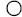
FIGURE 4. THE POINT.
In the Harris painting, it is almost impossible to see the minute white point at the heart of the tiny rose at the very center of the design. (If it's not there, it should be!) The white point symbolizes the shining point of pure existence, without size, and (as yet) without position. It is not really a point at all, but a state of infinite potentiality. It is the germ of creation before creation begins. As we will soon see, this point is the inscrutable nail that crucifies the tiny rose to the tiny cross. It also affixes the small rose cross to the large rose cross.
Just where the point came from is a supreme mystery, and Qabalists have soared to dizzying altitudes of speculation and argument in their attempts to understand and explain it. One very popular theory involves three inscrutable qualities of nothingness that, in the dawn of pre-creation, somehow ended up focusing (or contracting) to a point. They called these three veils Ain, Ain Soph, and Ain Soph Aur.
Ain
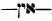
Nothing that is so nothing that it negates the concept of nothing-as-an-absence-of-something. (In other words, we can't even say, “It is nothing,” because there is no “it” and there is no “is” in this kind of nothing.)Ain Soph
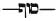
Limitless Nothing. (Nothing defined). There is now an “It” in the statement “It is nothing.”Ain Soph
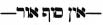
Limitless Light (Positive emptiness). There is now an “It” and an “is” in the statement “It is nothing.”I won't drag us deeper into these misty musings. I only bring it up because, as we will soon see, there is one tarot card, the Fool, that characterizes this (these) wonderful (non-) state(s) of nothingness. But we'll meet the Fool soon enough. Let's get back to the “point.”
Obviously, it is impossible to grasp the true nature of this preexistent point, but it is the essence and identity of absolute deity. It is also the essence and identity of your own secret self—the real you that exists at the very center of all the things you mistakenly think are you. If you truly understand the nature of the point, you understand the nature of yourself and deity.
A graphic artist or photographer would tell us that the massive and complex Hermetic Rose Cross develops outwardly from this central point. A film director trying to illustrate this concept might want to start with a close-up of the point, then slowly move back to show how the various components of the Cross develop. We won't do that.
To really see and understand the essence of this great design, we must go inside the point. We must zoom the camera of our imaginations in, past the circumference past the white nothingness, into the very heart of the germ of creation.
THE CUBIC STONE
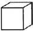
When the haze of nothingness disappears, we are presented with the image of a cube of what appears to be plain white stone. The ancients symbolized the point as a white cubical stone that contains within itself the potential of all creation. When we take a moment to consider how a cube is constructed, we come face to face with the first great secret of the Qabalah, and the answer to the question: Why does the tarot have twenty-two trump cards?
First, in order to be a cube, a point needs to extend into three dimensions; updown, right-left, and front-back.
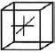
FIGURE 6. CONSTRUCTION OF THE CUBE.
These three dimensions create seven positions (the center and six sides) that create twelve oblique points or edges to the cube (3 + 7 +12 = 22). Qabalistic tradition67 tells us this is how deity formed the twenty-two letters of the sacred Hebrew alphabet by which all things in creation are verbally ordered into existence. The Hebrew alphabet is divided into three mother letters (attributed to the three primitive elements), seven double letters (attributed to the seven planets of the ancients), and twelve simple letters (attributed to the twelve signs of the zodiac).
TABLE 1. DIVISION OF THE HEBREW ALPHABET WITH ELEMENTAL, PLANETARY, AND ZODIACAL CORRESPONDENCES
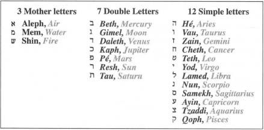
As long as the cube is sealed, creation is put “on hold,” and these twenty-two magick power-letters—these dimensions and positions and concepts—remain suspended in a state of brooding potentiality. They are like the invisible germ in the heart of the acorn that throbs with the potential of an eternity of future oak trees. In order for this sealed cube to initiate creation, it must sacrifice itself upon a cross by bursting open like a kernel of cosmic popcorn.
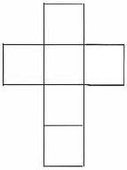
FIGURE 7. UNFOLDED CUBE—THE GOLDEN CROSS.
Creation begins, and we move from potentiality to actuality when, like a living stone, our white cube unfolds as a golden cross of six squares. Once opened, it reveals its secret treasure, a rose of five petals.
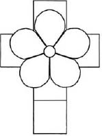
FIGURE 8. THE ROSE OF FIVE PETALS.
From time immemorial, the number five has symbolized the microcosm, the little world of humanity (five fingers, five senses, head and extremities, etc.), and the number six has symbolized the macrocosm, the greater world of deity.68 In the language of images, the rose of five crucified on the cross of six is a statement that tells us that, as human beings, we are inextricably connected to the larger world—the larger reality of deity. As above, so below; the microcosm perfectly reflects the macrocosm; Adam was made in the image of God, and so forth.
You might ask, if we are such perfect images of such perfection, why do things seem so imperfect? Why is there death and suffering? Why are there wars? Why are there fleas and black widow spiders? Why is there bad cholesterol? The answer is simple, but most of us are not yet equipped to accept it.
We are already—right here, right now—the perfect reflection of a perfect deity. The problem is that we do not have a clue who or what we really are. What we recognize as ourselves—the entity that laughs and weeps, that stubs its toes, falls in love, wins and loses, lives and dies—is not a true reflection of ourselves. We are something altogether different and more wonderful than anything we can imagine.
Discovering that the rose of our human fiveness is wedded to the cross of deity's sixness is the first goal of every spiritual seeker. The next (and last) goal is for us to identify completely with our secret self and come to the full realization that we are neither truly five nor six, but a great big beautiful eleven. This endeavor, for lack of a better name, is called the great work.
THE ROSE CROSS OF BEING
This small rose cross is the supreme glyph of the mystery of being and the common denominator between the world of the rose and the world of the cross—between you and me and our huge and all-encompassing counterpart. It is a single shining point of pure existence that radiates from the center of both the rose and the cross.
An unstoppable chain of events is set in motion when the cubical stone of primal existence pops open to create (what I will call) the Rose Cross of Being. Being now needs elbow room to manifest. Position, dimension, time, and space must be the next additions to the creation cycle. Four green barbs radiate in four directions from behind the rose as if to say to being “Now that you are—here's someplace to put yourself”
THE TWENTY-TWO TRUMPS
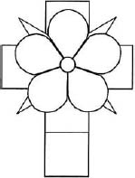
FIGURE 9. THE ROSE CROSS OF BEING.
The small Rose Cross of Being now gives birth to a larger (graphically speaking) rose. As it does, the heretofore potential qualities of three, seven, and twelve burst forth into actuality, and the twenty-two tarot trumps blossom into existence in three stages as the twenty-two petals of a great Rose of Manifestation.
First to bloom in the primary colors of yellow, blue, and red are the Fool, the Hanged Man, and the Aeon. These three personify the powers and qualities of the three mother letters of the Hebrew alphabet and the primitive elements of air, water, and fire.69
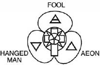
FIGURE 10. THREE PETALS OF THE ELEMENTAL TRUMPS.
Next to flower in the primary and secondary colors of the rainbow (scarlet, orange, yellow, green, blue, indigo, and violet) are the Tower, the Sun, the Magus, the Empress, the High Priestess, the Universe, and Fortune. These seven trumps personify the powers and qualities of the seven double letters of the Hebrew alphabet and the seven planets of the ancients: Mars, Sol, Mercury, Venus, Luna, Saturn, and Jupiter.
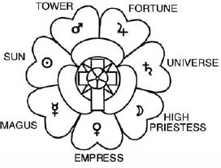
FIGURE 11. SEVEN PETALS OF THE PLANETARY TRUMPS.
Last to burst forth in a riot of primary, secondary, and intermediate colors (scarlet, orange-red, orange, amber, yellowish-green, emerald green, greenish-yellow, green-blue, blue, indigo, violet, and crimson ultraviolet) are the Emperor, the Hierophant, the Lovers, the Chariot, Lust, the Hermit, Adjustment, Death, Art, the Devil, the Star, and the Moon. These trumps personify the powers and qualities of the twelve simple letters of the Hebrew alphabet and the twelve signs of the zodiac: Aries, Taurus, Gemini, Cancer, Leo, Virgo, Libra, Scorpio, Sagittarius, Capricorn, Aquarius, and Pisces.
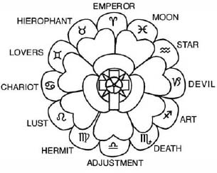
FIGURE 12. TWELVE PETALS OF THE ZODIACAL TRUMPS.
THE ROSE CROSS OF MANIFESTATION
Impelled by the creative dynamics that first formed the small Rose Cross of Being, the great rose crucifies itself on a large unfolded cube. For convenience sake, I will refer to this greater figure as the Rose Cross of Manifestation because it reveals the mysteries of the manifest universe—of principals, energies, forces (represented by the great rose of twenty-two petals and the tarot trumps) crucified upon the cross of time and space and matter. These mysteries, we will soon see, abide in aces, court cards, and the small cards of the four suits.
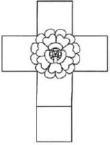
FIGURE 13. ROSE CROSS OF MANIFESTATION.
YHVH AND THE FOUR SUITS
The Hebrew mystics determined that it was much easier to meditate upon (and deal with) the qualities of the supreme being if they hypothetically divided it (and consequently everything else in the universe, including you and me) into four parts. To do this, they created the concept of a single God who exercised its omnipotence in a four-fold manner. They even gave this one God a four-letter name,
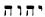
(the Hebrew letters Yod Hé Vau Hé, the English letters YHVH, commonly pronounced Jehovah).In a very real sense, YHVH is the “God” of creation. Creation is, after all, what we on earth, with our limited powers of perception, acknowledge as the reality of the world around us. Most of you reading this book, however, have a pretty good idea that there is more to the ultimate reality than things we can perceive with our senses. That also means that there is a much greater reality beyond, behind, and underlying the powers and forces that make up the God of creation.
The Greeks gave a title to this creator-God who thinks it is God but is too self-centered to realize that it too was created by something greater. They called it Demiourgos, or the demiurge. Zeus was a demiurge. Another name for Zeus is Jove, whose name, spelled in Hebrew, is uncomfortably close to Jehovah HTM Because the demiurge is not sure of its origin, it's understandable that it would be a bit insecure. It might even refer to itself as a jealous god and forbid the worship of any other competing deity. Hmm! But I digress.
The formula of YHVH divides the macrocosm into four descending worlds: Atziluth70 (the archetypal world, the environment of the consciousness of supreme deity), Briah (the creative world, the world of the great archangelic forces), Yetzirah (the formative world, the world of the angelic forces that execute the specific duties of their archangel masters), and Assiah (the material world).
At the same time, the formula of YHVH divides the microcosm (and the human soul) into four descending levels: Chiah (the life force), Neshamah (the divine soul-intuition), Ruach (the intellect), and Nephesh (the animal soul).
Finally, all of these four-part concepts can be expressed metaphorically as the four elements of fire, water, air, and earth, which in the tarot are represented by the four suits, Wands, Cups, Swords, and Disks.
When we speak of the four elements, we are not referring to the chemical elements that are the building blocks of matter. We are simply saying that, for classification purposes, we divide everything in the universe into four very broad categories. If anything is something enough to call it “something,” then it is fiery, watery, airy, or earthy in nature, and falls into one of the four categories represented by YHVH and the four tarot suits.
TABLE 2. THE FOUR TAROT SUITS ULTIMATELY REPRESENT THE DIVINE NAME, YOD HÉ VAU HÉ, AND ITS FOURFOLD DIVISION OF CREATION
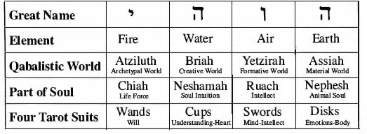
SPIRIT
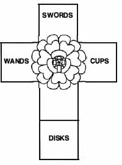
FIGURE 14. THE FOUR SUITS ON THE ROSE CROSS OF MANIFESTATION.
As we face the great cross, we see that the left arm is red to represent the fire suit Wands, the right arm blue for the water suit of Cups, the top yellow for the air suit of Swords, and the lowest extremity green for the earth suit of Disks. The square directly below the great rose is white and represents the fifth element, spirit. No single suit is attributed to spirit, for the influence of spirit pervades the entire deck—indeed, pervades all creation.
In the manifest universe, it is the job of the four elements to combine with each other. Nothing is entirely fire or water or air or earth. Even on the material plane, we see this is so. For example, hot magma from a volcano is fiery because of its heat, watery because it flows, earthy by nature, and exudes gas and steam. A lover's quarrel is fiery and explosive, watery because of the emotions, and airybecause it is swift and communicative.
Something is needed to bind the four elements together in infinite proportions and combinations in order to construct the universe. Something is also needed to keep the elements from melding and turning the universe into one big glob of mush. That something is spirit and, in the language of symbols, it is expressed by the pentagram.
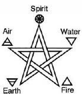
FIGURE 15. THE PENTAGRAM—SPIRIT RULERSHIP OF THE FOUR ELEMENTS.
THE ACES AND COURT CARDS
In tarot, the ace of each suit represents spirit in its purist form. Dwelling inside each ace are the four court cards of the suit. It's as though we look at an ace under a microscope and see that it is composed of a fiery component (the Knight), a watery component (the Queen), an airy component (the Prince), and an earthy component (the Princess).
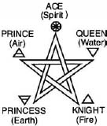
FIGURE 16. THE PENTAGRAM—THE ACE AND THE COURT CARDS.
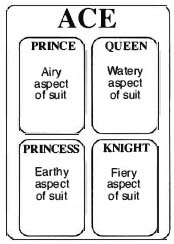
FIGURE 17. THE COURT CARDS ARE ELEMENTAL ASPECTS OF THE ACE.
TABLE 3. ELEMENTAL SUBDIVISIONS OF THE ACES AND COURT CARDS
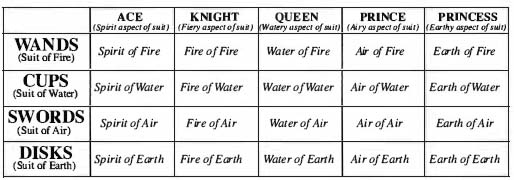
Four pentagrams, representing the ace and four court cards of each suit, are placed upon the extremities the Rose Cross of Manifestation.
It is the cosmic duty of the elements to combine and ^ix with each other in order to facilitate creation. We will see this demonstrated in greater detail later in our discussion of the aces, court cards, and small cards. On the diagram of the Hermetic Rose Cross, this elemental churning process is suggested by the colors of the four pentagrams on the arms of the cross:
- The pentagram representing the ace and court cards of fire (on the left arm) is colored green, (the combination of air-yellow and water-blue);
- The pentagram representing the ace and court cards of water (on the right arm) is colored orange, (the combination of air-yellow and fire-red);
- The pentagram representing the ace and court cards of air (on the top arm) is colored purple, (the combination of fire-red and water-blue).
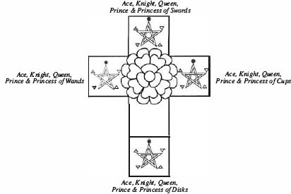
FIGURE 18. FOUR ACES AND SIXTEEN COURT CARDS.
But what about the pentagram of earth, on the lowermost extremity of the cross?
You will notice, as we continue to study the tarot, that in almost every case, the element of earth is treated differently than the other elements. It is as though earth is the stepchild of the elemental family (no offense to stepchildren). Think about it. We didn't see earth manifest along with fire, water, and air when the Great Rose started to blossom, did we? We will soon discover the Princess (the earthy aspect of her court-card family) doesn't get to rule thirty degrees of the zodiacal year like her father, the Knight; her mother, the Queen; and her brother, the Prince. What gives? Is earth really an element?
The answer is one of the most wonderful mysteries of the tarot, indeed, one of the most important secrets of Western Hermeticsm. Crowley tells us it is “the general doctrine that the climax of the Descent into Matter is the signal for the redintegration by Spirit.”71
I know that sounds like the kind of snooty Crowleyism that this book is meant to avoid. For years, the above phrase from the Book of Thoth didn't make any sense to me at al. I thought the word “redintegration” was a typographical error and that Crowley meant to write “reintegration.” “Redintigration” is indeed a word—a very archaic word meaning restoration to a former state. The importance of this word, and the “doctrine” Crowley mentions above will become clearer in chapter 11 (which concerns the Holy Guardian Angel) and when we begin to discuss the individual cards. For now, let's be satisfied to know that element earth is the lowest of the low in the universe. Therefore, it is especially sacred to and especially linked with the highest high.
On the Hermetic Rose Cross, the earth pentagram is pure white, but the entire lower extremity of the cross, upon which it sits, is divided into four sections colored black, citrine (a mixture of blue, red, and yellow but with a predominance of yellow), olive (a mixture of the same colors but with a predominance of blue), and russet (the same but with a predominance of red).
It is as though what began as the pure white light of the minute point at the center of the tiny rose has passed through a prism and separated into all the colors of the spectrum in the Great Rose. Then al the colors have mixed and remixed to form all aspects of creation until, by virtue of their own vibratory weight, they settle to the very bottom of the cross as dark and polluted colors. The pentagram that seals them is pure white, as if to say “This mess may be the lowest of the low, but it has something that no other section of creation has except the highest high—that is, a little bit of absolutely everything!”
The white square directly under the great rose contains a hexagram displaying the Sun surrounded by the other six planets of the ancients. Placing this symbol of the macrocosm in the midst of the four pentagrams of the microcosm echoes on a higher octave the symbolic message of the marriage of the human and the divine that was first told by the small rose and cross. Those of you who are familiar with the Lesser Ritual of the Pentagram will recall the words, “For about me flames the Pentagram. And in the column stands the six-rayed Star.”72
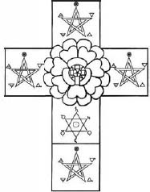
FIGURE 19. ELEMENTAL PENTAGRAMS OF THE MICROCOSM; PLANETARY HEXAGRAM OF THE MACROCOSM; UNION OF 5 AND 6, THE SYMBOL OF THE GREAT WORK ACCOMPLISHED.
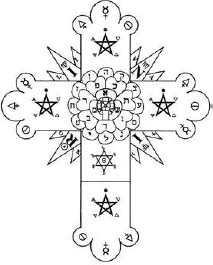
FIGURE 20. THE COMPLETED HERMETIC ROSE CROSS.
THE ALCHEMICAL SYMBOLS
Our examination of the Hermetic Rose Cross would be incomplete if we didn't examine the symbols of the three alchemical elements of sulfur, mercury, and salt, whose glyphs are found in the triple lobes at the end of each arm of the Great Cross. Not to be confused with the natural elements of fire, water, air, earth, and spirit, the three alchemical elements represent universal qualities or principals that interact with and are profoundly dependent upon each other. Crowley tells us that
Sulfur is Activity, Energy, Desire; Mercury is Fluidity, Intelligence, the power of Transmission; Salt is the vehicle of these two forms of energy, but itself possesses qualities which react on them.73
Notice that symbols for these three alchemical principals occupy different lobes on each arm of the Cross. Mercury is placed in the central lobe of the top and bottom arm, indicating dominance in air/Swords and earth/Disks. The symbol of salt dominates on the right arm (water/Cups), and the symbol of sulfur dominates the left arm (fire/Wands).
The secondary lobes of each arm are occupied with symbols of the not-so-dominant alchemical principals arranged in a logical and balanced manner. This is very important because, when these three principles are combined and balanced, they create the alchemical substance known as “vitriol,” the universal solvent. Vitriol will soon become very import to us as we study the inner mechanics of tarot. It is the initials of the alchemical motto: Visita interiora terrae rectificando invenies occultum lapidem (Visit the interior parts of the earth: by rectification thou shalt find the hidden stone). In his discussion of the trumps, Crowley goes so far as to identify three cards with the alchemical elements: the Magus is mercury, the Empress is salt, and the Emperor is sulfur.
Other trumps also have alchemical significance. The Art card is identified with vitriol, and the Lovers, the Hermit, Death, and the Devil all have vital roles to play in the alchemy of the tarot. There is also one more extremely important alchemical symbol we will see often when we examine the trumps. It is called the Orphic egg. “This egg represents the essence of all life that comes under the formula of male and female.”74
THE THREE GUNAS
Crowley's reference to the rajas of Hindu philosophy necessitates, at this point, a brief discussion of the gunas. The concept of the three alchemical elements is almost identical to that of the three gunas of Hindu cosmology. The three gunas are rajas, sattvas, and tamas (corresponding uncannily to sulfur, mercury, and salt). “”Al the qualities that can be predicated of anything,” Crowley points out, “may be ascribed to one or more of these Gunas: Tamas is darkness, inertia, sloth, ignorance, death and the like; Rajas is energy, excitement, fire, brilliance, restlessness; Sattvas is calm, intelligence, lucidity and balance.”75
These three qualities are universally present and at work in all manifested energy (including matter and you and me). They are in constant conflict and, at any given moment, one of them gains temporary dominance. Cosmic balance, however, dictates that no one principal can remain on top for very long before another usurps its position to enjoy its moment in the Sun.
The mechanics of this eternal three-way conflict is the driving force that turns the great wheel of the ever-changing universe. It is illustrated beautifully in the Thoth Tarot as Atu X, Fortune, where rajas (sulfur) is represented as the figure of the Sphinx, sattvas (mercury) by Hermanubis, and tamas (salt) by the figure of Typhon. More about this when we discuss Fortune.
THE BARBED ROSE LEAVES
Radiating like glories from behind the Great Rose are twelve barbed rose leaves—four large leaves each flanked by two small leaves. The four large leaves contain the letters I N R I and the astrological symbols for Virgo, Scorpio, Sol, and Virgo respectively. Three of the smaller leaves contain the letters L V X and three contain the letters I A O. The remaining two smaller leaves contain an additional letter I and a small Calvary Cross
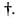
To be perfectly frank, I have never learned a satisfactory explanation for the presence or positioning of these two seemingly superfluous figures.The letters INRI are placed on the large leaves in the following order: I—upper left; N—upper right; R—lower left; I—lower right. The letters IAO and an extra I are placed on the smaller leaves to the right of the large leaves in the same order. The letters L V X and a small Calvary Cross are placed on the smaller leaves to the left of the large leaves in the same order. Because the Hermetic Rose Cross is the personal lamen of Adeptus Minor initiates of the Golden Dawn, and because the letters I N R I, L V X, and I A O play a key formulaic role in the mysteries of that degree, it is very appropriate that they appear on the device itself
I N R I can mean many things, including the venerable alchemical axiom, Igni natura renovatur integra (All of nature is restored by fire), and the powerful spell that I often use to repel obnoxious telemarketers: I'm not really interested! Christian tradition, however, informs us that, at Christ's crucifixion, Pontius Pilate ordered that a sign be posted at the head of the cross declaring in Latin, Greek, and Hebrew, “Jesus of Nazareth, King of the Jews.” The real sign must have been pretty large to accommodate the three sets of messages, but future artists would be satisfied to display only the four letters I N R I (the initials of the Latin words “Iesus Nazarenus, Rex Iudaeorum”) painted on a wooden board nailed at an angle above the head of a tortured and bleeding Jesus. For at least 1,400 years, the placard displaying the Latin letters INR I has been an indispensable accessory to every well-dressed crucifix.
Not being satisfied with the officially sanctioned explanations of these letters that appear on holy images and souvenirs, Christian mystics and others toyed with the heretical idea that there just might be something else—some esoteric meanings—to the images of popular religious symbolism. Risking the stake, these spiritual outlaws proceeded to analyze I N R I in such a way that it eventually said something other than Jesus from Nazareth, King of the Jews. That something else was the magical formula (and the signs of that formula) that expressed their highest understanding of the cosmic secrets of life, death, and resurrection. Briefly, here's what they did.
They first took the Latin letters I N R I and translated them into the Hebrew letters
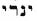
(reading from left to right: Yod, Nun, Resh, Yod). Then they meditated upon the astrological meanings of these Hebrew letters and discovered that they tell (in their own astrological way) the familiar Egyptian solar myth of Isis (Yod/Virgo) who mourns because an evil relative Apophis (Nun/Scorpio) has killed her husband, Osiris (Resh/Sol). Isis eventually raises Osiris from the dead, and the whole cycle starts again every morning and every springThat is how I N R I becomes I A O (which just happens to be the name of the supreme god of the Gnostics, who embodies the magical formula of life, death, and rebirth). Properly understood, the formula of I N R I / I A O explains the mystery of the annual revolution of the Earth around the Sun and its diurnal rotation upon its own axis. That is the highest mystery our Osirian Age ancestors could understand. It is also the secret mystery knowledge of all agricultural civilizations of the Age of Osiris. Not bad for seven letters (three of which are Is).
By tradition, Isis, Apophis, and Osiris, are pictured making certain gestures or signs:
In the sign of the Mourning of lsis, Isis holds her arms, suggestive of the letter L.
In the sign of Apophis and Typhon, Apophis thrusts his arms above his head at a ninety-degree angle, suggestive of the letter V.
In the sign of Osiris Slain, he holds his arms out to his sides as if he were crucified.
In the sign of Osiris Risen, he crosses his arms over his chest, forming an X on his body.77
Taken together, these are the signs of LV X, the Latin word for “light.” Here is how the key word I N R I is analyzed in formal ceremony:
I N R I
Yod. Nun. Resh. Yod.
Virgo, Isis, Mighty Mother
Scorpio, Apophis, Destroyer
Sol, Osiris, Slain and Risen
Isis, Apophis, Osiris
I A O
The sign Osiris Slain (give sign)
The sign of the Mourning of Isis (give sign)
The sign of Apophis and Typhon (give sign)
The sign of Osiris Risen (give sign)
(repeat last three signs)
L V X, Lux. The Light of the Cross.
Magical tradition informs us that, on the material plane and in normal waking consciousness, symbols are symbols and living things are living things. On the magical plane and in visionary consciousness, symbols are living things and living things are symbols. In other words, if I have a vision of a lion or a monkey, those images are merely symbols of something far deeper and abstract in my psyche that I need to confront. Conversely, symbols in visions are actually living things in that plane. Let's say I am faced, in a vision, by a terrible fire demon (a symbol of something I need to confront). I need only protect myself with a symbol—perhaps the banishing pentagram of fire, a symbol to me of the mastery of spirit over the elements, but a living thing to the demon who is forced by al the laws of its own existence to submit and obey.
I only bring up this tidbit of magical lore to impress upon you the immeasurable symbolic power stored in the Hermetic Rose Cross. Viewed on the magical plane, the Cross is teeming with magnificent life and energy. The adepts of the Golden Dawn who wear it as their personal lamen are possessed with a most powerful magical tool indeed.
Now, before we look at the cards themselves, let's learn just a little bit about the Tree of Life.